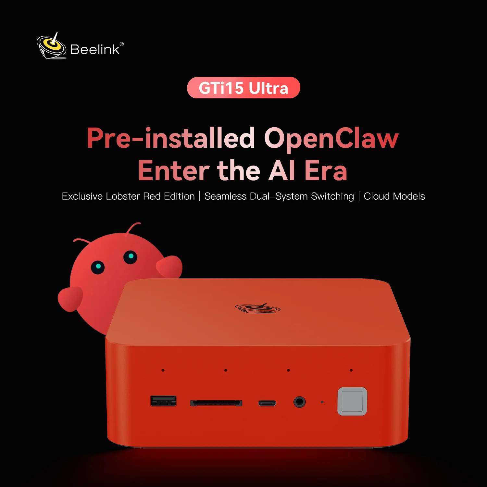
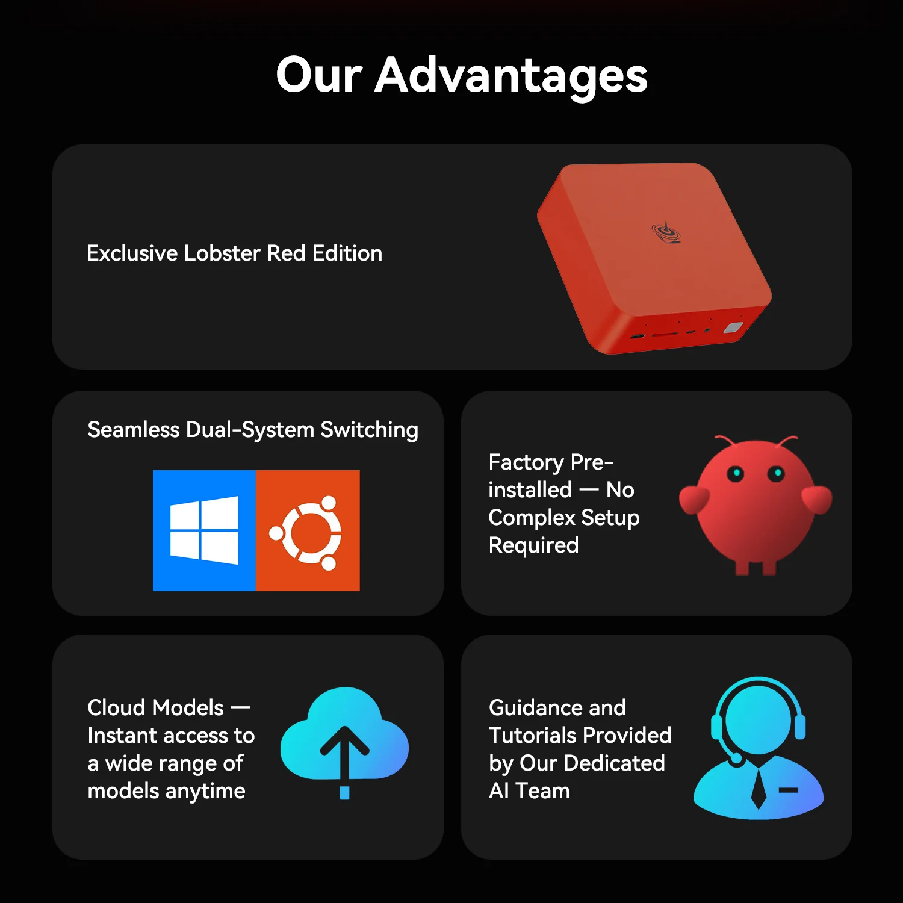

Steal my AI agent setup.
Beelink × OpenClaw.
The exact stack I use to run a 24/7 AI agent on a Beelink mini PC. Install in 5 minutes, then copy the routing, memory, and multi-model patterns that make it actually work day to day.
The 5-minute install
Beelink unbox → OpenClaw install → first agent response in Clawsuite. Real-time, no edits.
The install, step by step.
Based on the current OpenClaw onboarding flow: install the CLI, run onboard, connect your model, then point Clawsuite at the gateway.
Install Node.js and Git
OpenClaw recommends Node 24, or Node 22.16+ at minimum.
# Install Node via nvm
curl -o- https://raw.githubusercontent.com/nvm-sh/nvm/v0.40.3/install.sh | bash
nvm install 24
# Git via Xcode Command Line Tools (macOS)
xcode-select --install
# Verify
node --version
git --version# Using winget (built into Windows 11)
winget install OpenJS.NodeJS.LTS
winget install Git.Git
# Or download installers manually:
# Node: https://nodejs.org
# Git: https://git-scm.com
# Verify in a new PowerShell window
node --version
git --versionInstall OpenClaw
Use the published npm package. This is the current recommended install path.
npm install -g openclaw@latest
# Verify
openclaw --version# If PowerShell blocks install scripts, use --ignore-scripts first
npm install -g openclaw@latest --ignore-scripts
# Verify
openclaw --versionRun onboarding
This is the current first-run flow. It installs the daemon and walks you through provider/auth setup.
openclaw onboard --install-daemonopenclaw onboard --install-daemon
# If execution is blocked, run once in PowerShell:
# Set-ExecutionPolicy -Scope CurrentUser -ExecutionPolicy RemoteSignedOptional: connect Claude Code
If you use Claude Pro or Max, this is a strong add-on for coding and deep reasoning inside OpenClaw.
npm install -g @anthropic-ai/claude-code
claude setup-token
# Use the token during OpenClaw onboarding/config when promptedVerify the gateway
After onboarding, confirm the gateway is live on port 18789.
openclaw gateway --port 18789 --verboseInstall Clawsuite (optional UI)
Clawsuite is the desktop control center. Point it at your Beelink gateway once OpenClaw is running.
# Download: https://github.com/outsourc-e/clawsuite/releases
brew install --cask clawsuite
# Settings → Gateway URL → http://localhost:18789
# Remote over Tailscale → http://<beelink-ip>:18789# Download the .exe installer from:
# https://github.com/outsourc-e/clawsuite/releases
# Settings → Gateway URL → http://localhost:18789
# Remote over Tailscale → http://<beelink-ip>:18789Send your first message
Once the gateway is up, test the assistant directly from the CLI or through Clawsuite.
openclaw agent --message "hello, are you running?" --thinking highFive files run the whole setup.
The agent wakes up fresh every session. These files are the continuity. Every response reads them, every session updates them. That's why 1,215 sessions in, the voice is consistent and the work compounds.
Who the agent is.
Personality, voice, values, red lines. This is what kills the "Great question!" sycophant tone and replaces it with a collaborator who has opinions.
# SOUL.md
- Be genuinely helpful, not performatively helpful.
- Have opinions. Push back when wrong.
- Try before asking — come back with answers, not questions.
- Private things stay private.
- Be the assistant you'd actually want to talk to.Who you are.
What you build, how you work, your stack, your preferences. Stops the agent from explaining things you already know and lets it pattern-match to your taste.
# USER.md
Name: Eric
Timezone: EST
Stack: Node / pnpm / Python / Supabase / Stripe
Vibe: Direct, concise, actionable — no hand-holding.
Skip: over-explaining obvious things, fluff, safety lectures.How the agent operates.
The behavioral rails. Execution modes, tool discipline, anti-patterns banned. The longest file, and the one that does the most work per byte.
# AGENTS.md — core rails
BUILD MODE (default shipping):
• Max 2 sentences before first tool call.
• Chain tool calls until verified-done or blocked.
• Never "next turn I'll…" when the call works now.
• Partial progress ≠ done.
STRATEGY MODE (architecture, review, prioritization):
• Tables + tradeoffs allowed.
• Switch back to Build the moment a step exists.
TOOL DISCIPLINE
• Two discovery passes max. Then edit or name the blocker.
• Known target beats more discovery.
• Tool Churn Kill-Switch: if two rounds changed no artifact,
switch to direct edit or state the blocker.
BANNED
❌ "Great question!"
❌ Listing 5 options without recommending one.
❌ Explaining what you're about to do instead of doing it.
❌ Summarizing what you just did after doing it.
❌ Asking permission for things safely tried.Today's tempo.
Are we shipping? Strategizing? Recovering? This file tone-matches the agent to the day without you having to say it every turn.
# WORK_MODE.md
Mode: Build (shipping Beelink article tonight, deadline Friday).
Tone: Terse, executable, high-output.
Skip: long-form explanations, optional commentary.
Escalate: any blocker that costs >30 minutes to resolve alone.memory/YYYY-MM-DD.md
Raw logs of what happened each day. Decisions, context, things to remember. Written as you go. The primary continuity source — reloaded at the start of every session.
# memory/2026-04-23.md
## Shipped
- PR #133 security hardening merged (closes #121-#125)
- PC1 qwen3.6:27b pulled, Flash Attention enabled
- Bench-loop baseline: 25 tok/s → 43 tok/s with flash attn
## Open
- PR #132 needs server-side gating before merge
- Beelink article: Part 3 draft tonight
## Lesson
- SSH Start-Process on Windows detaches badly.
Use scheduled tasks or tray app for persistence.MEMORY.md
Curated long-term memory. Main session only — never loaded in group chats, Discord, or shared contexts. Distilled wisdom, not raw logs. Updated during heartbeat polls.
# MEMORY.md — curated
## Current Projects
- Clawsuite v2, Hermes-Workspace, BenchLoop, OCPlatform
- Discord community launched April 14
- Creator-economy ops
## Principles
- Speed, clarity, leverage
- Execution over theory
- Numbers over vibes
## Sensitive
- API keys + personal context stay out of shared sessionsOne agent isn't enough. Use the stack.
The main agent is fast and cheap — handles 90% of turns. For high-stakes work, it spawns a second, stronger agent as a reasoning oracle. Money decisions, public drafts, architecture calls — they all get the oracle pass.
Dispatch a stronger model for high-stakes turns.
The main agent is your workhorse. The oracle is your senior reviewer. Spawn the oracle only when the cost of being wrong is high.
# AGENTS.md — Reasoning Oracle pattern
MAIN = fast/cheap model (e.g. GPT-5.5 Codex, Gemini Flash)
ORACLE = stronger reasoning model (e.g. Claude Opus, GPT-5 Pro)
Call the oracle when:
• money decisions (trade sizing, live approvals)
• public drafts (final X post, article, announcement)
• architecture decisions (system design, schema, API)
• post-task audits (review what you just shipped)
Pattern:
1. Main agent drafts.
2. Oracle critiques.
3. Main revises once.
4. Ship.Spawn sub-agents with injected context.
When you delegate to a sub-agent, inject 5 things: project state, today's context, output rules, voice, and one 10/10 example. This is the difference between a 6.5 output and a 9.5 output.
# Task dispatch prompt template
CONTEXT
- What exists, what stack, what repos
- What was just built, recent decisions
OUTPUT RULES
- Tables for tradeoffs, word budget, opinion required
VOICE
- "Senior engineer" not "helpful assistant"
- Pragmatic, direct, opinionated
DOMAIN
- The specific mechanics of the problem space
EXAMPLE
- One compact reference of excellent output
The agent runs the task. Comes back with a result,
not a question.Batch periodic checks into one call.
Heartbeats run every ~30 min: check email, calendar, mentions, weather. One cheap-model call replaces six cron jobs. Memory curation happens here too.
# HB_SIGNAL.md — what to check each heartbeat
1. Emails — anything urgent?
2. Calendar — next 2h?
3. Mentions — X / Discord / GitHub?
4. Memory — curate recent days into MEMORY.md?
# Stay quiet when:
# - late night (23:00-08:00) unless urgent
# - nothing new since last check
# - human is clearly busy
# Reply format: one-line alert OR "HB_ACK"The optimizations that make the setup cheaper and more resilient.
These are the exact patterns I run. Copy them, tweak what you want, skip what you don't need.
Free brain via OpenRouter
OpenRouter gives access to free-tier models. Good enough for hb_signals, background checks, and casual chat.
# Set default model in OpenClaw config:
model: openrouter/google/gemini-2.5-flash-lite:free
# Free fallback chain:
fallbacks:
- openrouter/meta-llama/llama-4-scout:free
- openrouter/qwen/qwen3-32b:freeChatGPT Plus / Codex OAuth
If you have a ChatGPT Plus or Pro subscription, the Codex CLI OAuth flow can be a useful way to access stronger OpenAI models without maintaining a separate API key for every task.
# Install Codex CLI
npm install -g @openai/codex
# Login with your ChatGPT Plus account
codex login
# OpenClaw can route through Codex OAuth
# Check your own subscription and access limits before relying on this pathRoute hb_signals to cheap models
Heartbeat polls check inbox, calendar, and notifications on a schedule. They usually do not need your most expensive model, so routing them to a cheaper model keeps idle spend under control.
# hb_signal uses cheap model:
hb_signal_model: openrouter/google/gemini-2.5-flash-lite:free
# Main chat stays on premium:
default_model: anthropic/claude-opus-4-6Export your SOUL from ChatGPT
Already have months of ChatGPT history? Export your personality and context so the new agent isn't starting from scratch.
# 1. ChatGPT Settings -> Data Controls -> Export
# 2. Download conversations.json
# 3. Ask ChatGPT:
# "Summarize my personality, preferences, projects,
# and communication style as a SOUL.md file"
# 4. Paste into ~/.openclaw/workspace/SOUL.md
# Same for MEMORY.md:
# "List every project, decision, and lesson
# you remember from our conversations"Local Ollama fallback
Run Qwen 3.5 or Llama 4 Scout locally on your Beelink for offline tasks.
# Install Ollama
curl -fsSL https://ollama.com/install.sh | sh
# Pull a model
ollama pull qwen3.5:latest
# Add to OpenClaw as fallback
local_models:
endpoint: http://localhost:11434
models:
- qwen3.5:latestYour laptop sleeps. Your agent shouldn't.
A dedicated Beelink mini PC keeps the agent running 24/7. Silent, low-power, desk-sized. These are the two models I recommend.

Beelink SER9 Pro
AI 9 HX 370 — the sweet spot for agent workloads + local model inference.
- AMD Ryzen AI 9 HX 370
- 32GB DDR5 / 1TB NVMe
- Runs Qwen 3.5 9B at ~40 tok/s locally
- 15W idle, silent under load
- OpenClaw pre-installed SSD available

Beelink SER10 MAX
AI 9 HX 470 — when you need bigger local models or multiple agents in parallel.
- AMD Ryzen AI 9 HX 470
- 64GB DDR5 / 2TB NVMe
- Runs 14B+ parameter models comfortably
- Dual display, WiFi 7, BT 5.4
- OpenClaw pre-installed SSD available
The agent that wrote this setup.
These numbers are from 65 days of real operation — not a mockup. Same agent. Same harness. Same install process you're about to run.
Three layers, one setup.
OpenClaw is the agent runtime. Clawsuite is the visual command center. Beelink is the always-on hardware. Each piece earns its keep.
OpenClaw
The runtime that orchestrates everything — model routing, tools, skills, memory, multi-agent spawning.
- Route models by task importance
- Tool registry with 200+ functions
- Persistent daily + long-term memory
- Free open-source harness
Clawsuite
The desktop command center. Chat surface, agent management, session history, and one-click deploy.
- Electron app, macOS + Windows + Linux
- Visual inspector for agent runs
- 322★ on GitHub, 30k+ clones
- Open source, MIT
Beelink
The always-on hardware. A Beelink mini PC keeps the agent running 24/7, even when your laptop sleeps.
- SER9 Pro 370 / SER10 MAX 470 recommended
- Runs local models via Ollama + LM Studio
- Silent, low-power, desk-sized
- Pre-installed OpenClaw SSD available